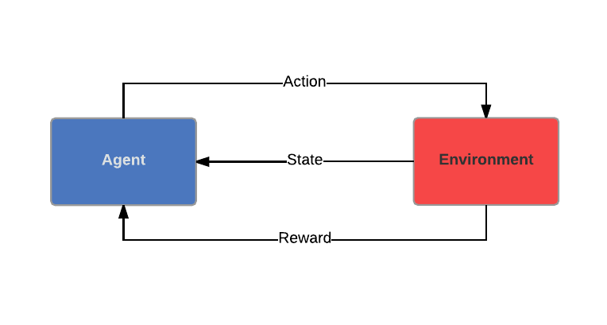

As seen in a previous post, Reinforcement Learning (RL) is a very rich and active research area in Machine Learning; it is defined in the very excellent book Reinforcement Learning: An Introduction as "computational approach to learning from interaction". It is a technique of choice to learn a sequence of actions for a given task.
We have seen the basics algorithms of RL for Planning, which means given a full model of an environment, how can we compute the optimal Value or Policy.
In this post, we are going to go through the Learning algorithms of Reinforcement Learning when the environment is unknown, and we try to estimate optimal policies from experience, namely, for finite state spaces:
- TD(0)
- Every Visit Monte Carlo
- $TD(\lambda)$
and for large state spaces:
- TD(0)
- Every Visit Monte Carlo
- $TD(\lambda)$
The Learning Scenario - a refresher:
Let's first go briefly through the learning scenario in RL. There are two entities in this scenario: the agent and the environment. Both entities interact through actions, states and rewards. The agent performs an action, which has an influence on the environment, and he receives two types of information: his current state in the environment and a reward corresponding to his action in the given state he was in, and the defined goal. The ultimate objective of the agent is to optimize his sequence of action, the policy.
Useful Definitions
Let's suppose we have a set of time points at which the agent interacts with the environment, namely Decision Epochs - most likely discrete in our case-; it will be noted \( {0, 1, ..., T} \). \( T\), the Horizon, might be finite or infinite. We now can introduce some concepts inherent to RL.
Markov Decision Process
The environment can be modelled through a Markov Decision Process. It is defined by:
- A countable set of States \( \mathcal{S} \)
- A countable set of Actions \( \mathcal{A} \)
- A transition Probability function: $$ \begin{align*} P & : & \mathcal{S} \times \mathcal{A} \times \mathcal{S} \longrightarrow & [0 ,1] \\ & & (s', a, s) \longmapsto & P(s_{t+1} = s' \vert s_t = s, a_t = a) \end{align*} $$ the probability that the agent will be in state \( s' \) at \( t+1 \) when in state \( s \) at time \( t \) and performing action \( a \). We will note the probability of this outcome \( P_{(s, s')}^a\).
- \( R^{a}_{(s, s')} \) is the expected immediate reward received after transitioning from state \( s \) to state \( s' \), due to action \( a \)
- \( \gamma \in [0, 1]\) the discount factor; it determines the value at time \( t \) of the future rewards from \( t+1 \) to \( T \). It is usually \( < 1 \), it models the fact that an immediate reward is better than an uncertain reward in the future. Insuring that it is strictly inferior to 1 also ensures that the sum is finite with an infinite horizon.
The future states and rewards are independent of the past, given the present. Let's precise that in our case, the states are fully observable.
Policy
A policy in this context is a map from states to probability distributions over actions \( \pi : S \rightarrow P(A=a \vert \mathcal{S}) \).
Return
Let's denote \( r_t = R^{a_t}_{(s_t, s_{t+1})}\) the reward for taking the action \( a \) at time \( t \) from state \(s_t \) to state \( s_{t+1} \), to make the notations slightly lighter. Then:- The Return is defined as: \( R_t = \sum_{k=0}^{N-1}r_{t+k+1}\),
- The Discounted Return is defined as: \( R_t = \sum _{k=0}^{T-1}\gamma^{k} r_{t+k+1}\) ,
Value Function
The Value Function gives an estimate of "how good" - in terms of expected return- it is for the agent to be in a given state, or to perform a given action in a given state.
- The Value Function for a given policy \( \pi \) is defined as: \( \forall s, V^{\pi }(s) = \mathbb{E}[R_t \vert s_t=s] \). It is the expected return when starting in state \(s\) and following \(pi\) thereafter.
- We can also define the Action Value Function for policy \( \pi \) as: \( Q^{\pi}(s, a) = \mathbb{E}_{\pi} [R_t \vert s_t = s, a_t = a]\)
- The Optimal Value Function is defined as: \( \forall s \in \mathcal{S}, V^{*}(s)=\max \limits _{\pi}V^{\pi }(s) \),
- The Optimal Action-Value Function is defined as: \( \forall (s,a) \in \mathcal{S} \times \mathcal{A}, Q^{*}(s, a )=\max \limits_{\pi}Q^{\pi }(s, a) \).
Now is probably a good time to mention this property, which will be essential in our peregrinations: $$ \begin{align*} \forall s \in \mathcal{S}, V^{*}(s) = \max \limits_{a \in \mathcal{A}} \sum_{s' \in \mathcal{S}} P_{(s,s')}^a [R_{(s,s')}^a + \gamma V^{*}(s')] \end{align*} $$ This equation is called the Bellman's optimality equation. This can be proven using the recursive relation in the definition of the Value Function and Return.
A policy is optimal if it has maximal value \( \forall s \in \mathcal{S}\). We can write this as: $$ \begin{align*} \forall s \in \mathcal{S}, \pi^{*}(s) = \arg \max \limits_{a \in \mathcal{A}} Q^{*} (s,a) \end{align*}$$
We have now defined all of the useful basic concepts in order to describe some algorithms :) .
$TD(0)$
As we have mentionned earlier, the goal of a reinforcement problem is to find the best course of actions or behavior. "Best" means in terms of return, and the course of action is the policy in our context. Computing the value function helps us finding better policies. In this blog post, we are interested in problems where the environment is fully known, which means that the transition probabilities and expected rewards are know for each pair of states, and each action. The most straightforward algorithm to come up with a policy is the policy iteration.
The idea here is to alternate a policy evaluation with a policy improvement. The policy evaluation consist of evaluating the value function under a given policy \( \pi \): $$ \begin{align*} \forall s \in \mathcal{S}, V^{\pi}(s) = \sum_{s' \in \mathcal{S}} P_{(s, s')}^{\pi(s)} [R_{(s, s')}^{\pi(s)} + \gamma V(s')] \end{align*}$$
.The policy improvement consist of: $$ \begin{align*} \forall s \in \mathcal{S}, \pi(s) = \arg \max \limits_{a} \sum_{s' \in \mathcal{S}} P_{(s, s')}^{a} [R_{(s, s')}^{a} + \gamma V(s')] \end{align*}$$ Alternating these two steps iteratively refines the optimal policy.
As pseudo code is usually very clarifying for most algorithms, here it is of the Policy Iteration (this may not display well on navigators that are not Chrome - trying to find an alternative, but for now this will do):
\begin{algorithm}
\caption{Policy Iteration}
\begin{algorithmic}
\PROCEDURE{Policy-Iteration}{$\pi_0, \mathcal{S}, \mathcal{A}, P, r, \theta, \gamma$}
\STATE $\pi \leftarrow \pi_0$
\STATE $\Delta \leftarrow 0$
\WHILE{$ \Delta < \theta $}
\COMMENT {Policy Evaluation}
\STATE {$\Delta \leftarrow 0$}
\FOR{$s \in \mathcal{S}$}
\STATE {$v \leftarrow V(s)$}
\STATE {$V(s) \leftarrow \max \limits_{a} \sum_{s'} P_{(s, s')}^a [R_{(s,
s')}^a + \gamma V(s')]$}
\STATE {$\Delta \leftarrow \max(\vert v - V(s)\vert)$}
\ENDFOR
\ENDWHILE
\STATE {policyStable $\leftarrow$ \TRUE}
\COMMENT {Policy Improvement}
\FOR{$s \in \mathcal{S}$}
\STATE {$b \leftarrow \pi (s)$}
\STATE {$\pi(s) \leftarrow \arg\max
\limits_{a} \sum_{s'} P_{(s, s')}^a [R_{(s,s')}^a + \gamma V(s')]$}
\IF{$b \neq \pi(s)$}
\STATE policyStable $\leftarrow$ \FALSE
\ENDIF
\ENDFOR
\IF{policyStable}
\COMMENT {If algorithm has converged}
\STATE stop
\ELSE
\STATE Go to Policy Evaluation
\ENDIF
\RETURN $\pi$
\ENDPROCEDURE
\end{algorithmic}
\end{algorithm}
This pseudocode is from Reinforcement Learning: An Introduction. The policy iteration algorithm generates a sequences of policies with non-decreasing performance, which means that the value at iteration \( k+1 \) cannot be smaller than the value function at iteration \(k\).
The proof of convergence of this algorithm can be obtained through the Bellman Operator and using its Monotonicity property.
In order to get a more pragmatic idea on how to implement this, and how the two algorithms differ, let's have a look how this algorithm is implemented in practice. There is some very readable code available here , but here is my take on the Python code. Let's first install the OpenAI Gym in Python by simply doing:
sudo pip install gym
Then we are going to use the Frozen Lake environment in the OpenAI Gym; it is a pretty simple environment, with a small state set and a small action set.
import numpy as np
from gym.envs.toy_text import FrozenLakeEnv, CliffWalkingEnv
import time
env = FrozenLakeEnv()
Here is a simple-to-read code for Policy Iteration:
def policy_iteration(env, theta=0.000001, discount_factor=0.9999):
"""
Policy Iteration Algorithm. Alternates Policy Evaluation Step with Policy Improvement Step.
The notations are from Reinforcement Learning: An Introduction, by Sutton et al.
:param env: OpenAI environment. In this environment, env.P is a dictionary with two keys - state, action- that
contains the transition probabilities of the environment, the next state and the reward for each
possible pair (state, action) in a tuple.
:param theta: float, threshold for convergence
:param discount_factor: float, discount factor, should be <1 for convergence.
:return: tuple(np.array([n_states x n_actions]), float), (policy,V) , the optimal policy, and optimal value function
"""
# Set initial policy
policy = np.ones([env.nS, env.nA]) / (env.nA * env.nS)
while True: # As long as the policy is the same as the previous one, we haven't converged.
# Policy Evaluation Step
##################################
# Set Value function to 0
V = np.zeros(env.nS)
converged = False
while not converged:
delta = 0
for s in range(env.nS): # For each state compute and store Value
v = 0
for a, action_probability in enumerate(policy[s]):
for p, next_state, rt, flag in env.P[s][a]:
# Compute Value
v += action_probability * p * (rt + discount_factor * V[next_state])
# Update Delta for this state
delta = max(delta, np.abs(v - V[s]))
V[s] = v
# When the Value Function doesn't change much anymore, we have converged for the policy evaluation step
if delta < theta:
converged = True
# Policy Improvement Step
##################################
# Flag to check convergence introduced in Sutton et al.
policy_stable = True
# Go through all states
for s in range(env.nS):
# Get the best action for this state under current policy
a_opt = np.argmax(policy[s])
# Get the action that maximizes the value
action_values = np.zeros(env.nA)
for a in range(env.nA): # Computes Action Values in order to obtain the best action
for p, next_state, rt, flag in env.P[s][a]:
action_values[a] += p * (rt + discount_factor * V[next_state])
# Compute the greedy policy
best_a = np.argmax(action_values)
if a_opt != best_a: # Check if the policy from previous step is different from the current one
policy_stable = False
policy[s] = np.eye(env.nA)[best_a] # Update the current policy for next Policy Evaluation step
# If the policy is stable we've found an optimal policy. Return it
if policy_stable:
return policy, V
This should give something like this for the Frozen Lake Environment, and the displayed default parameters:
Policy Iteration: Starting....
Executed in 0.0664029121399 seconds
Policy:
[[ 1. 0. 0. 0.]
[ 0. 0. 0. 1.]
[ 0. 0. 0. 1.]
[ 0. 0. 0. 1.]
[ 1. 0. 0. 0.]
[ 1. 0. 0. 0.]
[ 1. 0. 0. 0.]
[ 1. 0. 0. 0.]
[ 0. 0. 0. 1.]
[ 0. 1. 0. 0.]
[ 1. 0. 0. 0.]
[ 1. 0. 0. 0.]
[ 1. 0. 0. 0.]
[ 0. 0. 1. 0.]
[ 0. 1. 0. 0.]
[ 1. 0. 0. 0.]]
Value Iteration
The main issue with Policy Iteration is that it involves multiple sweepings of the state space \( \mathcal{S} \), which may be problematic with very large state spaces. The idea in Value Iteration (VI) is to truncate the Policy Evaluation after one sweep. This basically means using the Bellman's optimality equation as an update rule: $$ \begin{align*} \forall s \in \mathcal{S}, V_{k+1}(s) = \max \limits_{a} \sum_{s' \in \mathcal{S}} P_{(s,s')}^a [R_{(s,s')}^a + \gamma V_{k}(s')] \end{align*} $$ It can be proven that the Bellman equation admits a fixed point in \( V\), and this tells us that at every iteration, the value gets closer to its optimal value. Hence, at each iteration, the algorithms returns a greedy policy.
Here is the pseudo code for the VI algorithm:
\begin{algorithm}
\caption{Value Iteration}
\begin{algorithmic}
\PROCEDURE{Value-Iteration}{$\pi_0, \mathcal{S}, \mathcal{A}, P, r, \theta, \gamma$}
\STATE $V \leftarrow 0$
\STATE $\Delta \leftarrow 0$
\WHILE{$ \Delta < \theta $}
\STATE {$\Delta \leftarrow 0$}
\FOR{$s \in \mathcal{S}$}
\STATE {$v \leftarrow V(s)$}
\STATE {$V(s) \leftarrow \max \limits_{a} \sum_{s'} P_{(s, s')}^a [R_{(s,
s')}^a + \gamma V(s')]$}
\STATE {$\Delta \leftarrow \max(\vert v - V(s)\vert)$}
\ENDFOR
\ENDWHILE
\FOR{$s \in \mathcal{S}$}
\STATE {$\pi(s) \leftarrow \arg\max
\limits_{a} \sum_{s'} P_{(s, s')}^a [R_{(s,s')}^a + \gamma V(s')]$}
\ENDFOR
\RETURN $\pi$
\ENDPROCEDURE
\end{algorithmic}
\end{algorithm}
This algorithm converges in polynomial time, monotonically and is robust to uncertainty.
For these who are interested in proofs, the proof of convergence relies on proving that the optimal value is a fixed point in the Bellman equation. This is relatively straightforward to prove through the Bellman Operator and Banach Fixed Point Theorem, which we won't detail in this post, but you can take a look here .
A simple-to-read code for Value iteration is:
def value_iteration(env, theta=0.0000001, discount_factor=0.99):
"""
Value Iteration Algorithm.
The notations are from Reinforcement Learning: An Introduction, by Sutton et al.
:param env: OpenAI environment. In this environment, env.P is a dictionary with two keys - state, action- that
contains the transition probabilities of the environment, the next state and the reward for each
possible pair (state, action) in a tuple.
:param epsilon: float, threshold for convergence
:param discount_factor: float, discount factor, should be <1 for convergence.
:return: tuple(np.array([n_states x n_actions]), float), (policy,V) , the optimal policy, and optimal value function
"""
# Initialize value function
values = np.zeros(env.nS)
converged = False
while not converged:
# Stopping condition
delta = 0
# Go through all states
for s in range(env.nS): # Go through all states
# Find the best action
actions = np.zeros(env.nA) # Initialize actions vector
for a in range(env.nA): # Go through all actions
for p, next_state, rt, flag in env.P[s][a]: # Compute each action value
actions[a] += p * (rt + discount_factor * values[next_state])
# Get the value of best action
best_action_value = np.max(actions)
# Update delta for this state
delta = max(delta, np.abs(best_action_value - values[s]))
# Update value function
values[s] = best_action_value
# Convergence criteria
if delta < theta:
converged = True
# Determine optimal policy through value function
policy = np.zeros([env.nS, env.nA])
for s in range(env.nS):
# Get best actions for each state
actions = np.zeros(env.nA)
for a in range(env.nA):
for p, next_state, rt, flag in env.P[s][a]:
actions[a] += p * (rt + discount_factor * values[next_state])
best_action = np.argmax(actions)
# Get optimal policy with an indicator matrix
policy[s, best_action] = 1.0
return policy, values
This function should give this output for the Frozen Lake environment and the given default parameters:
Value Iteration: Starting....
Executed in 0.0293328762054 seconds
Policy:
[[ 1. 0. 0. 0.]
[ 0. 0. 0. 1.]
[ 0. 0. 0. 1.]
[ 0. 0. 0. 1.]
[ 1. 0. 0. 0.]
[ 1. 0. 0. 0.]
[ 1. 0. 0. 0.]
[ 1. 0. 0. 0.]
[ 0. 0. 0. 1.]
[ 0. 1. 0. 0.]
[ 1. 0. 0. 0.]
[ 1. 0. 0. 0.]
[ 1. 0. 0. 0.]
[ 0. 0. 1. 0.]
[ 0. 1. 0. 0.]
[ 1. 0. 0. 0.]]
We can see that both algorithms converge towards the same policy. The Policy Iteration takes more time than the value iteration for the same value of \( \theta \). But if you increase \( \theta \), you will still get the same optimal policy, and in fewer iterations (and time) than the Value Iteration algorithm. I encourage some playing with the parameters!!! You can find this code on my Github .
Linear Programming
For these of you who are familiar (and into) Optimization, the Bellman equation defines an Linear Programming optimization problem (linear objective function and linear constraints).
$$ \begin{align*} & \underset{V}{\text{minimize}} & & \sum_{s\in \mathcal{S}} \alpha (s) V(s)\\ & \text{subject to} & & \forall s \in \mathcal{S}, \forall a \in \mathcal{A}, V(s) \geq R_{(s,s')}^a + \gamma \sum_{s' \in \mathcal{S}} P_{(s,s')}^a V(s') \end{align*} $$\( \alpha \) can be interpreted as a probability to be in state \( s \). The number of rows (constraints) of this problem is \( \vert S \vert \vert A \vert \), and the number of columns (variables) \( \vert S \vert \). The algorithms solving LPs usually have a complexity depending on the number of rows of the problem, so we can use the dual formulation of this problem.
$$ \begin{align*} & \underset{\lambda}{\text{maximize}} & & \sum_{s\in \mathcal{S}, a \in \mathcal{A}} \lambda (s, a) R(s, a)\\ & \text{subject to} & & \forall s' \in \mathcal{S}, \sum_{a \in \mathcal{A}} \lambda (s', a) = \alpha (s') + \gamma \sum_{s \in \mathcal{S}, a \in \mathcal{A}} P_{(s,s')}^a \lambda (s, a) \\ & & & \forall s \in \mathcal{S}, \forall a \in \mathcal{A}, \lambda (s, a) \geq 0 \end{align*} $$The first constrains ensures that we are maximizing the return, and the second constraint makes sure that \( \lambda \) is a discounted sum of probabilities. The number of rows (constraints) of this problem is now \( \vert S \vert \), and the number of columns (variables) \( \vert S \vert \vert A \vert \), which is much more favorable here.
Conclusion
The two DP methods we presented here operate in sweeps through the state set. It is also interesting to note that they update an estimate based on another estimate, which boils down to bootstrapping. This is actually very interesting, since many other techniques in RL use bootstrapping, even when the environment is unknown.
Both of these methods require to store and update the Value Function at each iteration, but this can be improved by using Asynchronous DP; for instance, Asynchronous Value Iteration will update the Value for one state at each iteration, prioritizing some states for back-up. This method takes fewer state updates to converge than the previous two methods.
Finally, the Linear Programming approach is more direct, but can become rapidly intractable for larger states sets.
Here is a -non-exhaustive- table to sum it up. The \( \epsilon \) refers to an \( \epsilon \) approximation of \( V^{\pi}\), and \( r_{max} \geq \left \| r \right \|_{\infty}\).
| Algorithm | Policy Iteration | Value Iteration | Linear Programming |
|---|---|---|---|
| Complexity | \( \mathcal{O} (\vert \mathcal{S} \vert ^3)\) | \( \mathcal{O} (\vert \mathcal{A}\vert \vert \mathcal{S} \vert ^2)\) | Depends on the algorithms used to maximize the dual problem |
| Convergence rate | See “Improved and Generalized Upper Bounds on the Complexity of Policy Iteration” by B. Scherrer |
|
Depends on the algorithms used to maximize the dual problem |
| Pro | Converges in a finite number of iterations | Computationally efficient | Worst case convergence guarantees are better than DP counterparts |
| Cons | Each iteration requires a full policy estimate | Convergence is only asymptotic | Impractical for a very large number of states |
You can leave comments down here, or contact me through the contact form of this blog if you have questions or remarks on this post!